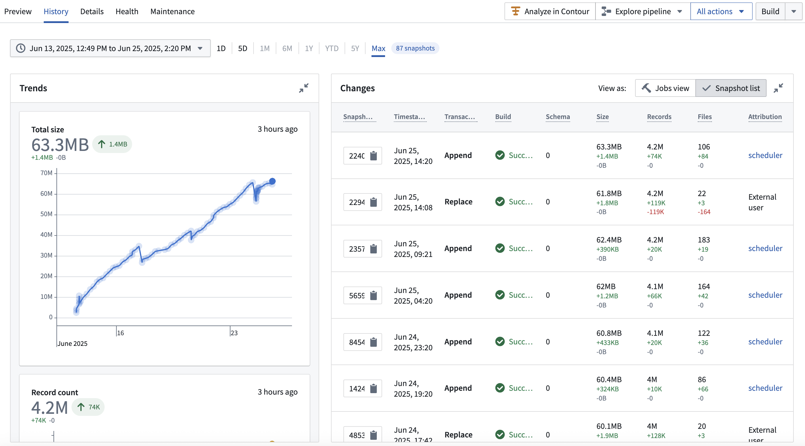

Iceberg tables and datasets are both resource types which allow you to represent tabular data in Foundry. Iceberg tables offer interoperability with the broader Iceberg ecosystem along with capabilities such as row-level edits and changelogs, while datasets currently support a wider set of Foundry features.
The following benefits of Iceberg tables are currently available in Foundry:
DELETE, UPDATE, and MERGE INTO statements, which allow you to conditionally modify rows without the need to re-snapshot.The interface for viewing Iceberg table history can be seen in the following screenshot:

Note that certain Foundry features are not currently supported for Iceberg tables, including:
The supported approach to granular access controls depends on where users access the data:
Iceberg tables also support markings for table-wide access controls. See Markings on Iceberg tables.
Support for including managed Iceberg tables in Marketplace products is in beta and may not yet be available on your enrollment. Contact Palantir Support to request access.
The following differences in behavior between Iceberg tables and Foundry datasets are important to note.
main, whereas Foundry's main branch is called master. In Foundry's integration with Iceberg, main and master are treated as the same, which means a Foundry job running on master will write to an Iceberg table's main. See Branching for details on how Foundry isolates schema changes per branch.ALTER TABLE. When writing through Foundry's transforms APIs and Pipeline Builder, Foundry uses table replaces when running non-incrementally to handle this for you. Other workflows, such as incremental schema evolution, may fail and require manual resolution. See the Apache Iceberg documentation on schema evolution â for details.Iceberg introduces terms that do not always have direct equivalents in Foundry:
| Iceberg term | Meaning | Foundry disambiguation |
|---|---|---|
| Table metadata â | Metadata describing the structure, schema, and state of an Iceberg table. | Foundry also tracks metadata for tables and datasets across all formats, but this metadata is managed internally by Foundry services. For Iceberg tables, Foundry exposes the native Iceberg metadata explicitly as a JSON file via the Iceberg catalog. |
| Snapshots â | A record of the table's state at a specific point in time. Iceberg creates a new snapshot with every data modification. | An Iceberg snapshot is roughly equivalent to a Foundry transaction. However, Foundry also uses the term "snapshot" differently: in Foundry, a "snapshot" refers to a transaction that fully replaces all data in a dataset, while an Iceberg snapshot captures all types of data operations, including incremental changes. See Iceberg snapshot types for a complete disambiguation of Foundry catalog dataset transaction types and Iceberg snapshot types. |